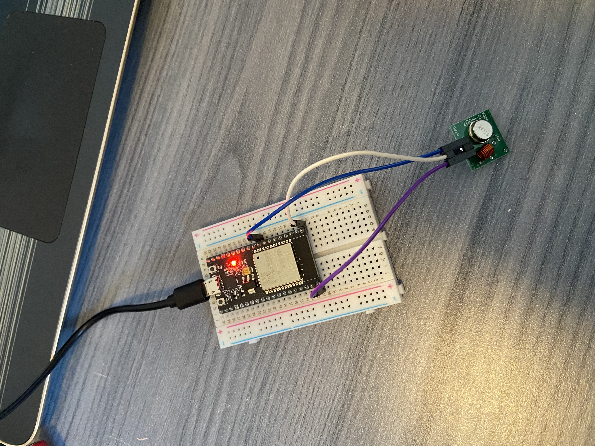

Part Two: Sensors and Actuators
In de tweede les was het doel de andere sensoren aan te sluiten op de ESP. De onderdelen dit dit keer aan bod komen zijn:
Monitoring Soil Moisture
Allereerst wordt de vochtsensor gebruikt om het watergehalte van de bodem te monitoren. Hierdoor kan straks beslit worden wanneer de pomp aangezet moet worden om de plant water te geven. Zoals te zien is veranderd de vochtigheid op het moment dat je je hand om de Moisture Sensor houdt. Op het moment dat deze sensor gebruikt zou worden bij de plant, dan zouden de waarden veranderen met dat de vochtigheid veranderd.
Controlling the relay
Om de vochtigheid van de grond ook te kunnen beheersen, wordt er gebruik gemaakt van een pomp. Met deze pomp kan de plantbewatering worden geautomatiseerd. Deze pomp wordt bestuurd door een motoraandrijving, welke hieronder is weergegeven.
Zoals te horen is volgen er twee kliks achter elkaar. De eerste betekent dat de pomp aan zou staan, en de tweede dat die weer uitgaat. In onderstaande video wordt dat kort duidelijk. Tevens zie je tussendoor getallen, dit omdat naast de relay ook de moisture sensor is aangesloten en dit dus ook wordt gemeten op de achtergrond.
Integrating the DHT (Ditital temperature/humidity) sensor
De DHT-sensor werkt door een meting uit te voeren en daarna de resultaten naar de ESP32 te sturen. Wat gemeten wordt is, zoals de naam doet vermoeden, zowel de vochtigheid als de temperatuur. De vochtigheid wordt in procenten weergegeven en de temperatuur in graden Celsius.


Switching the klinkaanklikuit
Om het licht boven een plant te kunnen controleren, kan er gebruik gemaakt wordden van een klikaanklikuit. Dat is in dit geval een stopcontacht wat bij bepaalde waarden aan of uit gaat. Om dit voor elkaar te krijgen, dient de RF Transmitter aangesloten te worden op de ESP32.
Aansluiting RF Transmitter aan de ESP32 
Klikaanklikuit in werking
Blynk App
Tot slot heb ik bovenstaande sensoren gekoppeld aan de Blynk-app. Op deze app kon ik de sensoren bedienen (aan of uit doen) en waren de waardes af te lezen. Dit laatste is hieronder te zien.

Ga terug naar 'Smart Technology' Ga terug naar vorige pagina Ga naar volgende pagina